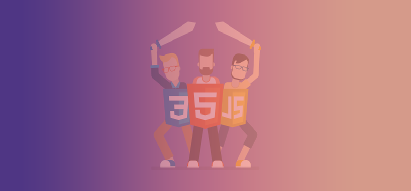

SoFlo Nucleus is made by students, so we know how hard it is to look for different resources. We have created 2 different pages, each with a ton of resources. We break these pages down by job titles.

Front End Web Developer
Front End Web Developers are the masters of the front end. Everything that you see as a visitor to a website was created by one of these amazing developers. The web would be a bleak place without them. Front End developes, develop websits with HTML, CSS, and Javascript.
Front End Web Developers are the masters of the front end. Everything that you see as a visitor to a website was created by one of these amazing developers. The web would be a bleak place without them. Front End developes, develop websits with HTML, CSS, and Javascript.
Backend Developers are the programmers that allow the websites to run. Using their wizadry prowess allows: forms to be submitted, blogs to be published, and apps to be created. Backend Developers program in a wide varitety of languages like: Python, Ruby, PHP, and more.
Backend Developers are the programmers that allow the websites to run. Using their wizadry prowess allows: forms to be submitted, blogs to be published, and apps to be created. Backend Developers program in a wide varitety of languages like: Python, Ruby, PHP, and more.